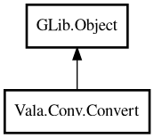

Convert
Object Hierarchy:

Description:
public class Convert : Object
Type conversion utility methods.
Content:
Static methods:
- public static string boolToString (bool b)
Converts bool to string.
- public static string doubleToString (double d, int precision)
Converts double to string with precision.
- public static string intToBinary (int n)
Converts int to binary string.
- public static string intToHex (int n)
Converts int to hexadecimal string.
- public static string intToOctal (int n)
Converts int to octal string.
- public static string intToString (int n)
Converts int to string.
- public static bool? toBool (string s)
Converts string to bool.
- public static double? toDouble (string s)
Converts string to double.
- public static int? toInt (string s)
Converts string to int.
- public static int64? toInt64 (string s)
Converts string to int64.
Creation methods:
Inherited Members:
All known members inherited from class GLib.Object
- @get
- @new
- @ref
- @set
- add_toggle_ref
- add_weak_pointer
- bind_property
- connect
- constructed
- disconnect
- dispose
- dup_data
- dup_qdata
- force_floating
- freeze_notify
- get_class
- get_data
- get_property
- get_qdata
- get_type
- getv
- interface_find_property
- interface_install_property
- interface_list_properties
- is_floating
- new_valist
- new_with_properties
- newv
- notify
- notify_property
- ref_count
- ref_sink
- remove_toggle_ref
- remove_weak_pointer
- replace_data
- replace_qdata
- set_data
- set_data_full
- set_property
- set_qdata
- set_qdata_full
- set_valist
- setv
- steal_data
- steal_qdata
- thaw_notify
- unref
- watch_closure
- weak_ref
- weak_unref